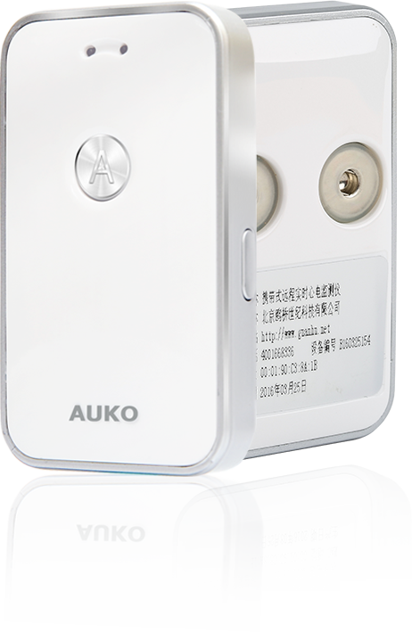
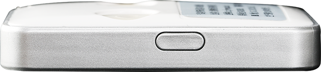
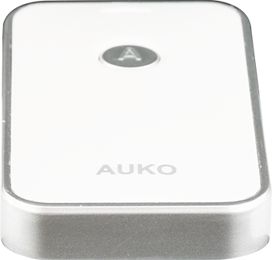
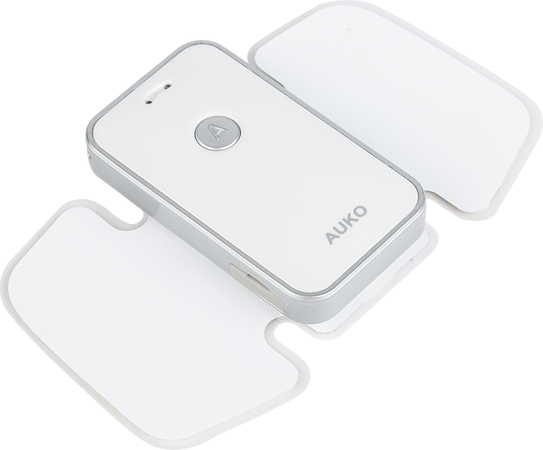
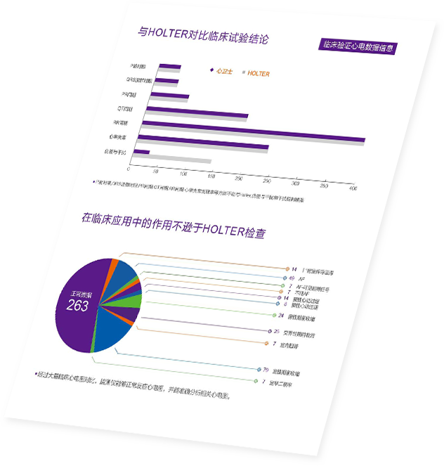
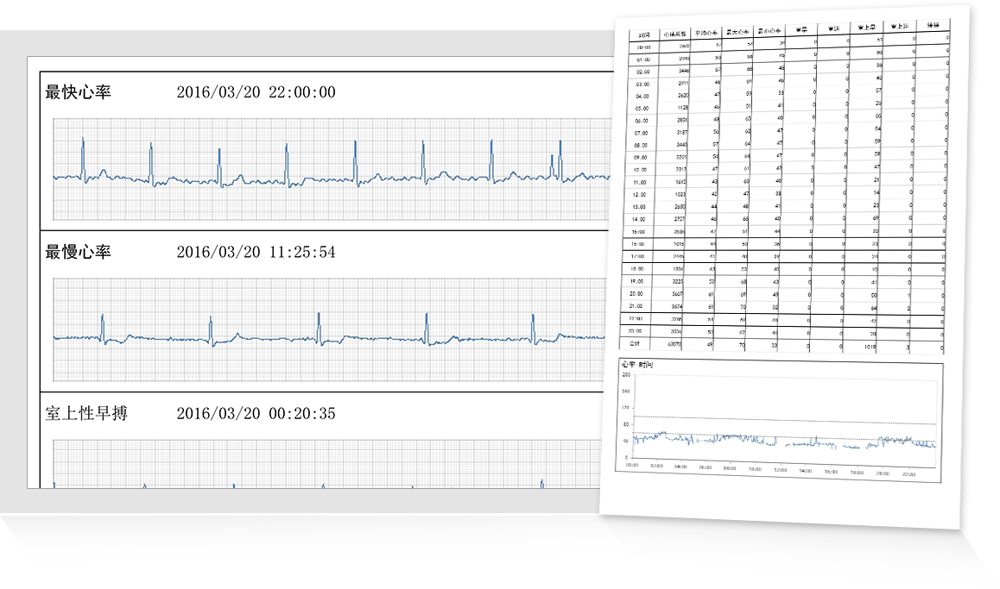

心卫士2代
心卫士，中国首创微型远程实时心电监测仪首款获得CFDA认证的互联网实时心电监测仪
技术优势
-
超低耗材硬件技术
抗干扰性强，持续续航可达7*24小时以上
-
人工智能技术
智能模糊匹配算法、深度自适应学习算法、智能分析、趋势预测
-
微生物电传感技术
数据采集更敏锐、强化心电数据准确性

实时监测
实时心电波形显示，随时随地监测心电情况
连续记录
实时、不间断地监测心脏情况，为患者的即时诊断和治疗提供帮助

手动捕捉
捕捉异常心电数据，为心脏病治疗提供诊断依据
智能分析
百万级心电图数据库，广域、多维、高阶角度动态分析心电图，可准确分辨出10种以上心电异常，检出率达97%以上

云端存储
长期保存心电数据，建立私人定制化心电图档案
心电档案
连续记录、长期保存心电数据，建立私人定制化心电图档案

及时反馈
24小时反应机制。24小时内即可获得专业心电监测分析报告和专家建议

医生服务
权威医生一对一提供心电报告和健康咨询服务
临床应用效果
临床验证报告显示：心卫士与Holter记录的数据在波形、振幅、间期等方面无差异。发现心律失常的情况高度关联，发现心律失常的能力无差别
完全能为临床医生提供有效、准确的心电数据信息。

专家资源：心脏联盟医院
心脏联盟医院由中华医师协会心血管分会会长马长生教授创办，是中国最权威的心血管医生集团运营的互联网心脏医院
100位首席专家 300位核心专家 600位主治医师
应用实例
- 1、袁女士，65岁，30年心脏病史 2次射频消融手术。
- 2016年5月起常发心慌、头晕，因无法提供发病时的心电图，医生建议使用长程心电监测设备。 在连续使用“心卫士”心电监测仪期间，多次捕捉到“室上速”发作的心电图形，拿到“心卫士”提供的专业心电图报告后，到协和医院就诊，未临床大夫提供有价值的诊断依据。
- 2、苏女士，63岁，2016年1月发生多次晕厥。
- 经医院检查一直未确定晕厥原因，经介绍使用“心卫士”产品，佩戴第一晚就捕捉到多段“长间歇”，家人拿“心卫士”提供的心电报告及时到安贞医院进行救治、治疗。
